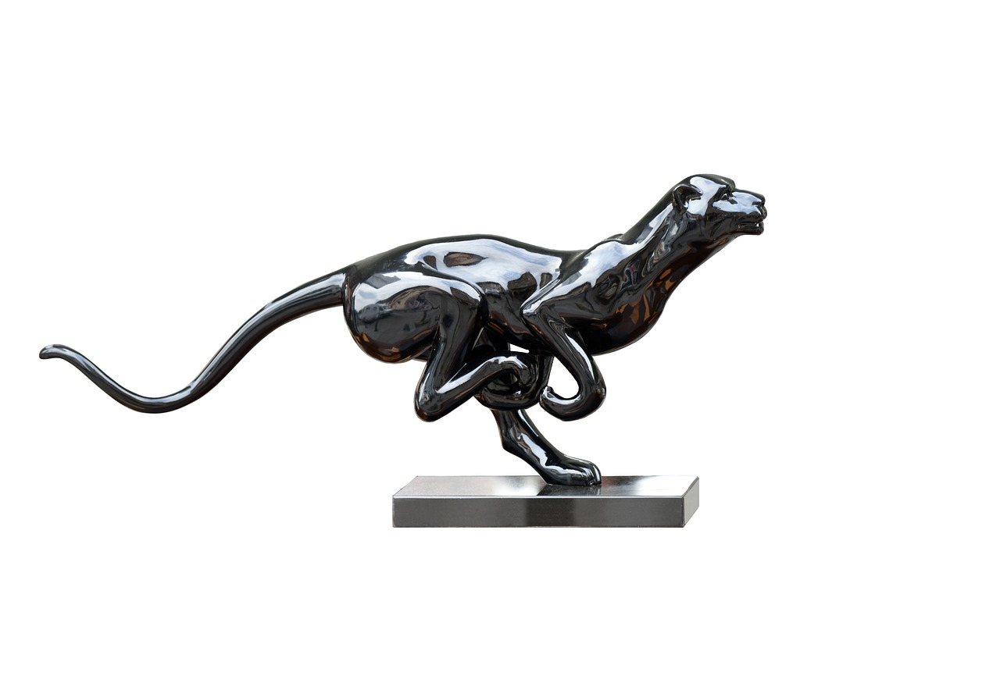

nada que decir al respecto, it's just my favorite color.

Este porsche es uno de mis favoritos de la marca, auqnue en real encantan demasiados tipos de autos, pero los deportivos y de lujo son the best, pero si tuviese que elegir uno definitivamente seria este, nah i don't thinkidad me you understand... i'm obsessed.

La sensacion que genera esta cancion, las vibes que transmite simplemete son indescriptibles, dar las vibes de esta cancion seria todo un placer.
Ser Agente del FBI ah sido mi sueño frustrado de siempre, este trabajo me a llamado la atencion desde que tengo memoria y se me hace un trabajo muy importante,interesante y misterioso, que no cualquiera podria dominar y eso me encanta.
Espero presenciar este fenómeno astronómico tan hermoso y unico, por imagenes y videos me causa un sentimiento indescriptible y mi sueño es experimentarlo y apreciarlo en persona, para vivir la experiencia completa

La pantera negra es uno de mis animales favoritos, por que me transmite poder, elegancia, misterio y esas son mis vibras y palabras favoritas.